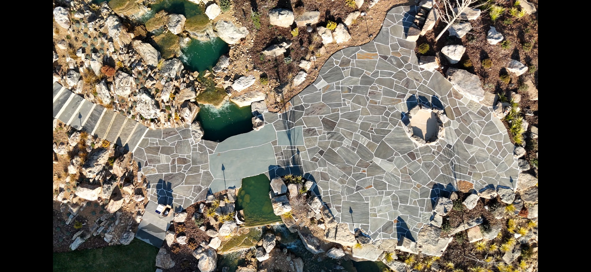

Plant Man builds pondless waterfalls, stone fountains, bubblers, and water-feature upgrades for Charlotte-area homeowners who want motion, sound, and a clean finished look.

Replace this paragraph with exact wording about maintenance, pump systems, lighting, and whether Plant Man services existing water features.